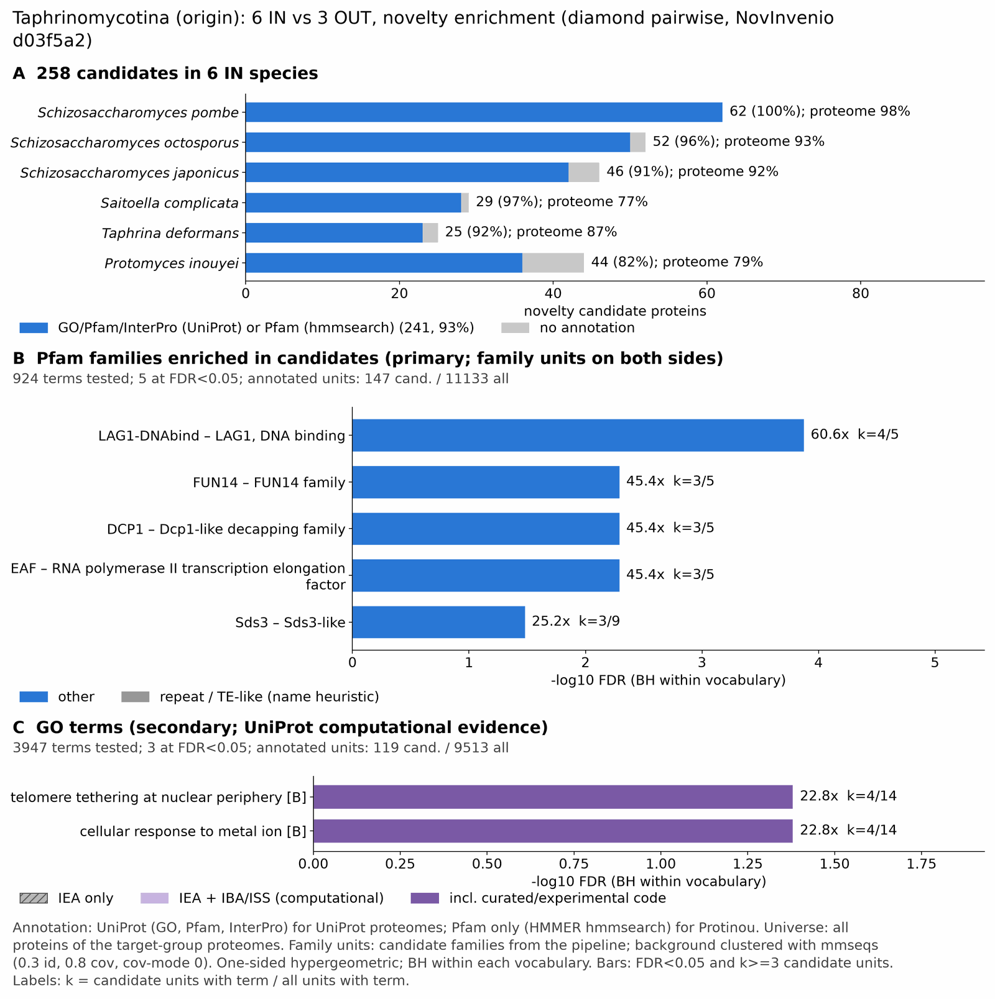

yc taphrinomycotina: functional enrichment (novelty)
One-sided hypergeometric test per term; Benjamini-Hochberg FDR within each scope, level and vocabulary. Candidates are the novelty candidates: gene families present in the IN group and absent from the OUT group. Universe: proteome. Background clustered: True (32711 sequences in 15573 clusters, mmseqs easy-cluster --min-seq-id 0.3 -c 0.8). Family level: one unit per candidate family and per background cluster.
Sources: Pfam: 2026-01-27-Pfam38.2; InterPro entries: 110.0; GO: releases/2026-07-26; analysis generated 2026-10-24T14:28:54. Source tables: /bigdata/stajichlab/jstajich/projects/NovInvenio_Investigations/studies/fungi/yeast_convergence/yc_taphrinomycotina/analysis/enrichment/outputs/proteome_clustered.
Full record: PROVENANCE. Run report: report.html.
Related: yeast_convergence: comparison across contrasts
- Annotation provenance is not fully recorded: PROVENANCE.yaml lists the per-species annotation files and their checksums, but not the UniProt release they come from.
- GO results are secondary. GO annotations include computational evidence (IEA, IBA); the GO evidence column shows if a term has non-IEA support.
- Candidate families (pipeline clustering of candidates) and background clusters (mmseqs clustering of the background proteome) are made by different runs, so family-level counts are not fully comparable.
- GO and InterPro cover only 5 of 6 species: Spom, Schiocto, Schijapo, Saitcomp, Taphdefo. No GO and InterPro annotation for Protinou; this species adds no units to the GO and InterPro tests, so those results describe the covered species only.
Summary figure

Annotation coverage
Fraction of proteins with at least one term per vocabulary. Universe = all proteins of the species; candidates = the candidate set.
| Species | Set | Proteins | Pfam | Pfam clan | InterPro | GO | Any |
|---|---|---|---|---|---|---|---|
| Spom | universe | 5129 | 89.7% | 69.8% | 91.7% | 97.7% | 98.1% |
| Spom | candidates | 62 | 91.9% | 58.1% | 96.8% | 98.4% | 100.0% |
| Schiocto | universe | 4964 | 88.8% | 69.6% | 91.2% | 87.2% | 92.8% |
| Schiocto | candidates | 52 | 84.6% | 53.8% | 96.2% | 80.8% | 96.2% |
| Schijapo | universe | 4862 | 89.4% | 70.4% | 91.9% | 85.2% | 92.4% |
| Schijapo | candidates | 46 | 76.1% | 54.4% | 91.3% | 73.9% | 91.3% |
| Saitcomp | universe | 7118 | 73.4% | 60.2% | 76.9% | 67.8% | 77.1% |
| Saitcomp | candidates | 29 | 89.7% | 62.1% | 96.5% | 72.4% | 96.5% |
| Taphdefo | universe | 4650 | 82.8% | 67.3% | 87.0% | 76.6% | 87.3% |
| Taphdefo | candidates | 25 | 80.0% | 40.0% | 92.0% | 56.0% | 92.0% |
| Protinou | universe | 6246 | 79.3% | 63.7% | 0.0% | 0.0% | 79.3% |
| Protinou | candidates | 44 | 81.8% | 52.3% | 0.0% | 0.0% | 81.8% |
| ALL_IN | universe | 32969 | 83.1% | 66.3% | 70.4% | 66.3% | 86.8% |
| ALL_IN | candidates | 258 | 84.5% | 54.3% | 78.7% | 66.7% | 93.4% |
Tests summary
Per vocabulary: terms with FDR < 0.05 / terms tested. Protein level counts proteins; family level counts candidate families and background clusters.
| Scope | Level | Cand. units | Pfam sig / tested | Pfam clan sig / tested | InterPro sig / tested | GO sig / tested |
|---|---|---|---|---|---|---|
| whole_set | family | 171 | 5 / 924 | 1 / 330 | 1 / 1458 | 3 / 3947 |
| whole_set | protein | 258 | 27 / 3546 | 8 / 456 | 31 / 6133 | 32 / 5837 |
| Protinou | family | 44 | 0 / 322 | 0 / 194 | 0 / 0 (not_available_no_annotated_units) | 0 / 0 (not_available_no_annotated_units) |
| Protinou | protein | 44 | 0 / 370 | 0 / 203 | 0 / 0 (not_available_no_annotated_units) | 0 / 0 (not_available_no_annotated_units) |
| Saitcomp | family | 29 | 0 / 247 | 0 / 215 | 0 / 637 | 0 / 1989 |
| Saitcomp | protein | 29 | 0 / 289 | 0 / 225 | 0 / 733 | 0 / 2082 |
| Schijapo | family | 45 | 0 / 150 | 0 / 163 | 0 / 442 | 0 / 2537 |
| Schijapo | protein | 46 | 0 / 203 | 0 / 179 | 0 / 562 | 0 / 2649 |
| Schiocto | family | 51 | 0 / 151 | 0 / 165 | 0 / 442 | 0 / 2616 |
| Schiocto | protein | 52 | 0 / 201 | 0 / 173 | 0 / 563 | 0 / 2739 |
| Spom | family | 61 | 0 / 154 | 0 / 168 | 0 / 452 | 0 / 3000 |
| Spom | protein | 62 | 0 / 220 | 0 / 180 | 0 / 598 | 0 / 3161 |
| Taphdefo | family | 25 | 0 / 141 | 0 / 168 | 0 / 440 | 0 / 1624 |
| Taphdefo | protein | 25 | 0 / 167 | 0 / 173 | 0 / 493 | 0 / 1671 |
Top 25 Pfam terms (whole set, family level)
25 rows shown, ordered by FDR then p-value; 5 have FDR < 0.05 (bold).
| Term | Name | k / N cand. | n / M bg | Fold | FDR (BH) |
|---|---|---|---|---|---|
| PF09271 | LAG1-DNAbind: LAG1, DNA binding | 4 / 147 | 5 / 11133 | 60.588 | 1.33e-04 |
| PF04930 | FUN14: FUN14 family | 3 / 147 | 5 / 11133 | 45.441 | 0.005 |
| PF06058 | DCP1: Dcp1-like decapping family | 3 / 147 | 5 / 11133 | 45.441 | 0.005 |
| PF09816 | EAF: RNA polymerase II transcription elongation factor | 3 / 147 | 5 / 11133 | 45.441 | 0.005 |
| PF08598 | Sds3: Sds3-like | 3 / 147 | 9 / 11133 | 25.245 | 0.033 |
| PF13621 | Cupin_8: Cupin-like domain | 3 / 147 | 14 / 11133 | 16.229 | 0.114 |
| PF08524 | rRNA_processing: rRNA processing | 2 / 147 | 5 / 11133 | 30.294 | 0.173 |
| PF15370 | NOPCHAP1: NOP protein chaperone 1 | 2 / 147 | 5 / 11133 | 30.294 | 0.173 |
| PF16455 | UBD: Ubiquitin-binding domain | 2 / 147 | 5 / 11133 | 30.294 | 0.173 |
| PF00366 | Ribosomal_S17: Ribosomal protein S17 | 2 / 147 | 6 / 11133 | 25.245 | 0.193 |
| PF08282 | Hydrolase_3: haloacid dehalogenase-like hydrolase | 2 / 147 | 6 / 11133 | 25.245 | 0.193 |
| PF23036 | TRAPPC10_1st: Trafficking protein particle complex subunit 10-like, N-terminal | 2 / 147 | 6 / 11133 | 25.245 | 0.193 |
| PF01393 | Chromo_shadow: Chromo shadow domain | 2 / 147 | 8 / 11133 | 18.934 | 0.327 |
| PF00641 | Zn_ribbon_RanBP: Zn-finger in Ran binding protein and others | 2 / 147 | 10 / 11133 | 15.147 | 0.480 |
| PF03151 | TPT: Triose-phosphate Transporter family | 2 / 147 | 13 / 11133 | 11.651 | 0.756 |
| PF00319 | SRF-TF: SRF-type transcription factor (DNA-binding and dimerisation domain) | 2 / 147 | 15 / 11133 | 10.098 | 0.938 |
| PF02845 | CUE: CUE domain | 2 / 147 | 17 / 11133 | 8.91 | 1.000 |
| PF00385 | Chromo: Chromo (CHRromatin Organisation MOdifier) domain | 2 / 147 | 20 / 11133 | 7.573 | 1.000 |
| PF00621 | RhoGEF: RhoGEF domain | 2 / 147 | 24 / 11133 | 6.311 | 1.000 |
| PF01284 | MARVEL: Membrane-associating domain | 1 / 147 | 5 / 11133 | 15.147 | 1.000 |
| PF01965 | DJ-1_PfpI: DJ-1/PfpI family | 1 / 147 | 5 / 11133 | 15.147 | 1.000 |
| PF02410 | RsfS: Ribosomal silencing factor during starvation | 1 / 147 | 5 / 11133 | 15.147 | 1.000 |
| PF03959 | FSH1: Serine hydrolase (FSH1) | 1 / 147 | 5 / 11133 | 15.147 | 1.000 |
| PF05486 | SRP9-21: Signal recognition particle 9 kDa protein (SRP9) | 1 / 147 | 5 / 11133 | 15.147 | 1.000 |
| PF08244 | Glyco_hydro_32C: Glycosyl hydrolases family 32 C terminal | 1 / 147 | 5 / 11133 | 15.147 | 1.000 |
Top 25 InterPro terms (whole set, family level)
25 rows shown, ordered by FDR then p-value; 1 have FDR < 0.05 (bold).
| Term | Name | k / N cand. | n / M bg | Fold | FDR (BH) |
|---|---|---|---|---|---|
| IPR008967 | Homologous_superfamily:p53-like transcription factor, DNA-binding domain superfamily | 3 / 137 | 5 / 10301 | 45.114 | 0.033 |
| IPR045126 | Family:Trafficking protein particle complex subunit TRAPPC10/Trs130 | 2 / 137 | 5 / 10301 | 30.076 | 0.831 |
| IPR056913 | Domain:TRAPPC10/Trs130, N-terminal | 2 / 137 | 5 / 10301 | 30.076 | 0.831 |
| IPR013907 | Family:Sds3-like | 2 / 137 | 7 / 10301 | 21.483 | 1.000 |
| IPR004853 | Domain:Sugar phosphate transporter domain | 2 / 137 | 11 / 10301 | 13.671 | 1.000 |
| IPR041667 | Domain:Cupin-like domain 8 | 2 / 137 | 11 / 10301 | 13.671 | 1.000 |
| IPR050186 | Family:Triose Phosphate/Phosphate Translocator | 2 / 137 | 12 / 10301 | 12.532 | 1.000 |
| IPR003892 | Domain:Ubiquitin system component CUE | 2 / 137 | 19 / 10301 | 7.915 | 1.000 |
| IPR000219 | Domain:Dbl homology domain | 2 / 137 | 21 / 10301 | 7.161 | 1.000 |
| IPR003347 | Domain:JmjC domain | 2 / 137 | 23 / 10301 | 6.538 | 1.000 |
| IPR035899 | Homologous_superfamily:Dbl homology (DH) domain superfamily | 2 / 137 | 23 / 10301 | 6.538 | 1.000 |
| IPR038765 | Homologous_superfamily:Papain-like cysteine peptidase superfamily | 3 / 137 | 65 / 10301 | 3.47 | 1.000 |
| IPR029062 | Homologous_superfamily:Class I glutamine amidotransferase-like | 2 / 137 | 29 / 10301 | 5.186 | 1.000 |
| IPR014710 | Homologous_superfamily:PpnP-like, jelly roll fold | 2 / 137 | 30 / 10301 | 5.013 | 1.000 |
| IPR000266 | Family:Small ribosomal subunit protein uS17 | 1 / 137 | 5 / 10301 | 15.038 | 1.000 |
| IPR002818 | Domain:DJ-1/PfpI-like | 1 / 137 | 5 / 10301 | 15.038 | 1.000 |
| IPR006614 | Domain:Peroxin/Ferlin domain | 1 / 137 | 5 / 10301 | 15.038 | 1.000 |
| IPR006722 | Family:Trafficking protein particle complex subunit 2 | 1 / 137 | 5 / 10301 | 15.038 | 1.000 |
| IPR007138 | Domain:Antibiotic biosynthesis monooxygenase domain | 1 / 137 | 5 / 10301 | 15.038 | 1.000 |
| IPR015010 | Domain:TERF2-interacting telomeric protein 1, Myb domain | 1 / 137 | 5 / 10301 | 15.038 | 1.000 |
| IPR023296 | Homologous_superfamily:Glycosyl hydrolase, five-bladed beta-propeller domain superfamily | 1 / 137 | 5 / 10301 | 15.038 | 1.000 |
| IPR050914 | Family:Small nuclear ribonucleoprotein-associated SmB/NAA38-like | 1 / 137 | 5 / 10301 | 15.038 | 1.000 |
| IPR051092 | Family:FYVE, RhoGEF and PH domain-containing | 1 / 137 | 5 / 10301 | 15.038 | 1.000 |
| IPR035979 | Homologous_superfamily:RNA-binding domain superfamily | 5 / 137 | 164 / 10301 | 2.292 | 1.000 |
| IPR000209 | Domain:Peptidase S8/S53 domain | 1 / 137 | 6 / 10301 | 12.532 | 1.000 |
Top 15 GO terms (whole set, family level) — secondary, computational evidence (IEA/IBA) included
15 rows shown, ordered by FDR then p-value; 3 have FDR < 0.05 (bold).
| Term | Name | k / N cand. | n / M bg | Fold | FDR (BH) | GO evidence | Families with non-IEA |
|---|---|---|---|---|---|---|---|
| GO:0034398 | biological_process:telomere tethering at nuclear periphery | 4 / 119 | 14 / 9513 | 22.84 | 0.042 | has_non_IEA | 2 |
| GO:0071248 | biological_process:cellular response to metal ion | 4 / 119 | 14 / 9513 | 22.84 | 0.042 | has_non_IEA | 2 |
| GO:0010038 | biological_process:response to metal ion | 4 / 119 | 16 / 9513 | 19.985 | 0.050 | has_non_IEA | 2 |
| GO:0034397 | biological_process:telomere localization | 4 / 119 | 20 / 9513 | 15.988 | 0.095 | has_non_IEA | 2 |
| GO:0031390 | cellular_component:Ctf18 RFC-like complex | 3 / 119 | 10 / 9513 | 23.982 | 0.170 | has_non_IEA | 2 |
| GO:0001228 | molecular_function:DNA-binding transcription activator activity, RNA polymerase II-specific | 6 / 119 | 77 / 9513 | 6.229 | 0.235 | has_non_IEA | 4 |
| GO:0001216 | molecular_function:DNA-binding transcription activator activity | 6 / 119 | 78 / 9513 | 6.149 | 0.235 | has_non_IEA | 4 |
| GO:1990071 | cellular_component:TRAPPII protein complex | 3 / 119 | 15 / 9513 | 15.988 | 0.384 | has_non_IEA | 3 |
| GO:0050000 | biological_process:chromosome localization | 5 / 119 | 60 / 9513 | 6.662 | 0.389 | has_non_IEA | 3 |
| GO:0017128 | molecular_function:phospholipid scramblase activity | 2 / 119 | 5 / 9513 | 31.976 | 0.543 | has_non_IEA | 1 |
| GO:0034498 | biological_process:early endosome to Golgi transport | 2 / 119 | 5 / 9513 | 31.976 | 0.543 | has_non_IEA | 2 |
| GO:0032783 | cellular_component:super elongation complex | 2 / 119 | 6 / 9513 | 26.647 | 0.588 | IEA_only | 0 |
| GO:0060963 | biological_process:positive regulation of ribosomal protein gene transcription by RNA polymerase II | 2 / 119 | 6 / 9513 | 26.647 | 0.588 | IEA_only | 0 |
| GO:2000638 | biological_process:regulation of SREBP signaling pathway | 2 / 119 | 6 / 9513 | 26.647 | 0.588 | has_non_IEA | 1 |
| GO:0030008 | cellular_component:TRAPP complex | 3 / 119 | 22 / 9513 | 10.901 | 0.588 | has_non_IEA | 3 |
Actin cytoskeleton controls
Known actin-related families and how many of their proteins pass each filter. Protein ID columns are left out.
| control | pfam_ids | desc_regex | IN_universe | IN_in_matrix | IN_pass_ingroup_rule | candidates | near_miss_out1 | near_miss_out2 | n_Spom | n_Schiocto | n_Schijapo | n_Saitcomp | n_Taphdefo | n_Protinou | n_Nirr | n_Amega | n_Ncra |
|---|---|---|---|---|---|---|---|---|---|---|---|---|---|---|---|---|---|
| Arp2/3 ARPC2 (P34-Arc) | PF04045 | 6 | 6 | 6 | 0 | 0 | 0 | 1 | 1 | 1 | 1 | 1 | 1 | 1 | 1 | 1 | |
| Arp2/3 ARPC3 (P21-Arc) | PF04062 | 6 | 6 | 6 | 0 | 0 | 6 | 1 | 1 | 1 | 1 | 1 | 1 | 0 | 1 | 1 | |
| Arp2/3 ARPC4 | PF05856 | 6 | 6 | 6 | 0 | 0 | 0 | 1 | 1 | 1 | 1 | 1 | 1 | 1 | 1 | 1 | |
| Arp2/3 ARPC5 (P16-Arc) | PF04699 | 5 | 5 | 5 | 0 | 0 | 0 | 1 | 1 | 1 | 1 | 0 | 1 | 1 | 1 | 1 | |
| Arp2/3 ARPC1 (description only) | arp2/3 complex.*(41|p41|subunit 1)|ARPC1 | 0 | 0 | 0 | 0 | 0 | 0 | 0 | 0 | 0 | 0 | 0 | 0 | 1 | 0 | 0 | |
| Arp2 / Arp3 (description only) | actin-related protein (2|3)\b|\bARP[23]\b | 32 | 32 | 32 | 0 | 0 | 4 | 7 | 7 | 7 | 5 | 6 | 0 | 6 | 7 | 6 | |
| WAVE complex NCKAP1 | PF09735 | 0 | 0 | 0 | 0 | 0 | 0 | 0 | 0 | 0 | 0 | 0 | 0 | 0 | 0 | 0 | |
| WAVE complex CYFIP (FragX_IP) | PF05994 | 0 | 0 | 0 | 0 | 0 | 0 | 0 | 0 | 0 | 0 | 0 | 0 | 0 | 0 | 0 | |
| WAVE complex ABI | PF07815|PF27594 | 0 | 0 | 0 | 0 | 0 | 0 | 0 | 0 | 0 | 0 | 0 | 0 | 0 | 0 | 0 | |
| SCAR/WAVE (SCAR_helical) | PF27569 | 0 | 0 | 0 | 0 | 0 | 0 | 0 | 0 | 0 | 0 | 0 | 0 | 0 | 0 | 0 | |
| WASP family (WH1) | PF00568 | 6 | 6 | 6 | 0 | 0 | 0 | 1 | 1 | 1 | 1 | 1 | 1 | 1 | 2 | 1 | |
| WH2 motif (WASP, WAVE, others) | PF02205 | 14 | 14 | 14 | 0 | 1 | 5 | 2 | 2 | 2 | 2 | 3 | 3 | 2 | 2 | 1 | |
| Formin FH2 | PF02181 | 14 | 14 | 9 | 0 | 0 | 0 | 3 | 3 | 3 | 2 | 1 | 2 | 1 | 1 | 1 | |
| Formin Drf_GBD / Drf_FH3 / Drf_DAD | PF06371|PF06367|PF06345 | 19 | 19 | 14 | 0 | 0 | 0 | 4 | 4 | 4 | 3 | 2 | 2 | 2 | 1 | 2 | |
| Ena/VASP (VASP_tetra) | PF08776 | 0 | 0 | 0 | 0 | 0 | 0 | 0 | 0 | 0 | 0 | 0 | 0 | 0 | 0 | 0 | |
| Coronin (description only) | coronin | 4 | 4 | 4 | 0 | 0 | 0 | 1 | 1 | 1 | 1 | 0 | 0 | 1 | 1 | 1 | |
| Cortactin (HS1_rep) | PF02218 | 0 | 0 | 0 | 0 | 0 | 0 | 0 | 0 | 0 | 0 | 0 | 0 | 0 | 0 | 0 | |
| Myosin 2 tail (Myosin_tail_1) | PF01576 | 0 | 0 | 0 | 0 | 0 | 0 | 0 | 0 | 0 | 0 | 0 | 0 | 0 | 1 | 0 | |
| Myosin head (all myosins) | PF00063 | 25 | 25 | 25 | 0 | 0 | 0 | 5 | 5 | 5 | 3 | 3 | 4 | 5 | 4 | 4 |
Page written by bin/generate_enrichment_page.py.